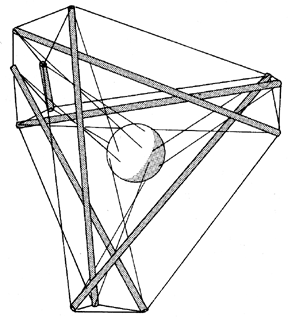

|  |
| Fig. 401.05 The six compression members are the acceleration vectors trying to escape from Universe at either end by action and reaction, while the ends of each would-be escapee are restrained by three tensors; while the ball at the center is restrained from local torque and twist by three triangulated tensors from each of the four corners tangentially affixed. |